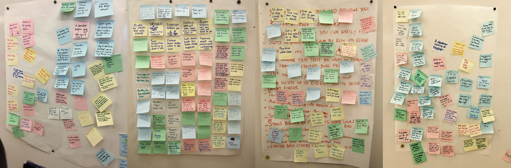
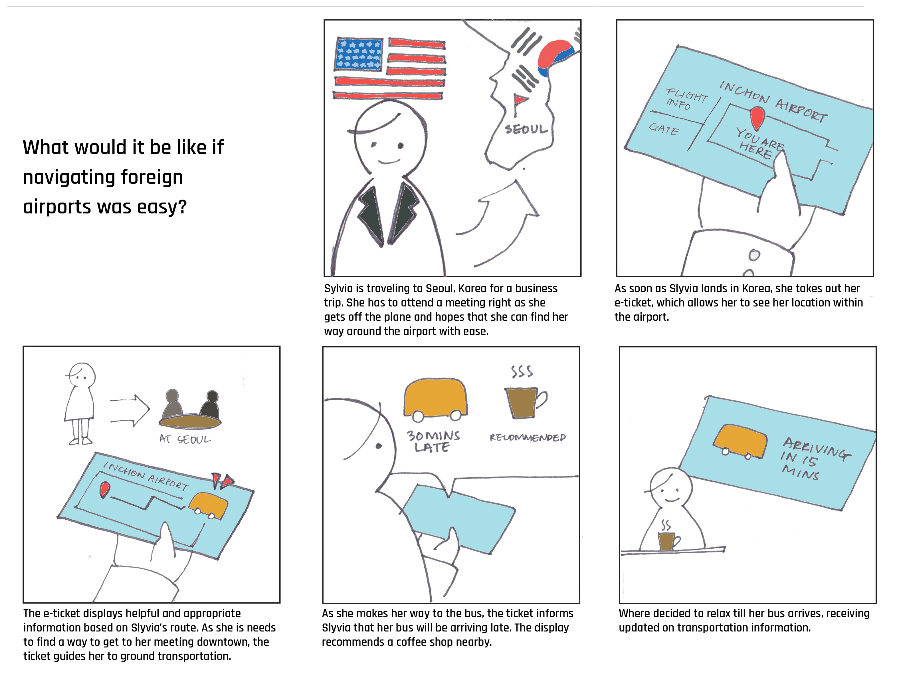
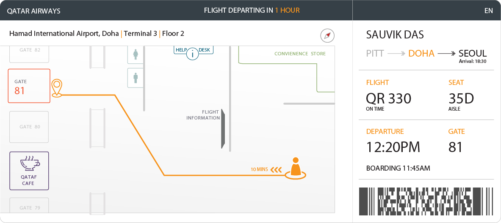
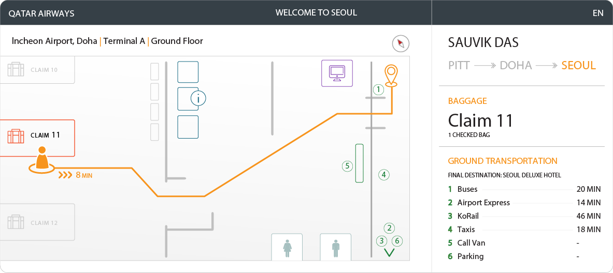
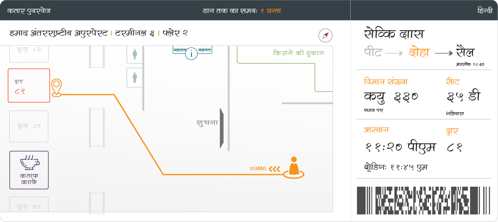
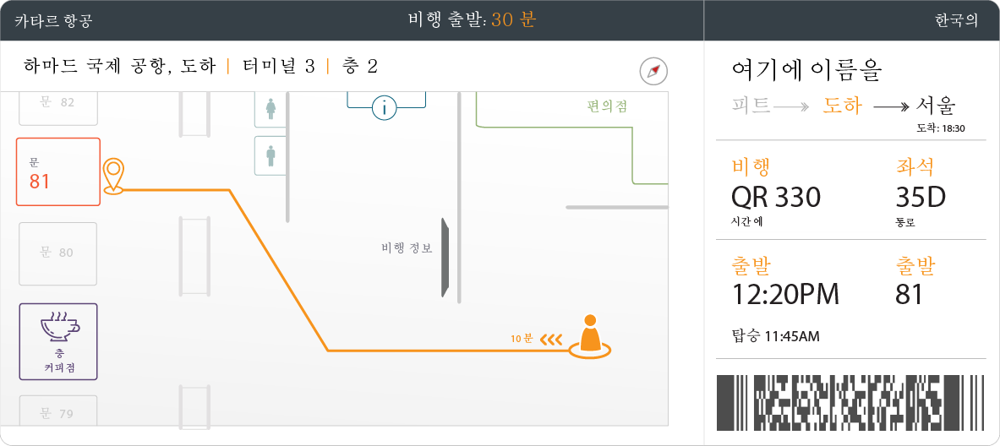

Project Description
In my Interaction Design Studio class, one of my project assignments was to create a video sketch for a ubiquitous computing concept. My team’s assigned audience was travelers at the airport.Research
 We started our research by visiting Pittsburgh International Airport and conducting an ethnographic research. This research helped us gain insight on how people behave physically, socially, emotionally, intellectually and culturally in the airport.
We started our research by visiting Pittsburgh International Airport and conducting an ethnographic research. This research helped us gain insight on how people behave physically, socially, emotionally, intellectually and culturally in the airport.
From our visit, we recorded a number of observations and brainstormed the design space. We identified a variety of parameters that influence the airport experience. For example, there are a variety of stakeholders in the airport — travelers, cleaning staff, people waiting for pickups. And these people are in a variety of contexts — for example, transitioning between connecting flights or in a line or eating food.
In examining the design space and thinking about the problems we identified in our needs finding investigation, we identified a number of opportunities that resonated with us. These included a way to help passengers navigate through unfamiliar airports given limited time, sensors to help cleaning staff do their job, a queue management system to hasten long lines as well a system to track passenger’s bags and inform them, at baggage claim, of when their bag would get there.
Idea Generation
Using our observations from our visit, we generated 50 potential ubiquitous computing ideas that can be used. Then, using bodystorming, we acted out many of our ideas and narrowed it down to 6 ideas that we thought were the best and produced personas for each of the 10 ideas.
- Ambient personal displays that indicate if a traveler is open to conversation
- A dashboard tracking all the baggages : location/airport/delivering/arrived
- Projection on bags - some sort of game that entertains travelers while they are waiting for their bags
- Bags make a sound when they land on the carousel based on how heavy they are, creating a song
- Security line divided by plane departure time
- “Fast” and “slow” line for check-in based on what the traveler is carrying
- Display for time when hotel shuttle or bus or parking shuttle comes. Lights on ground that lead to bus with ETA
- Customised itinerary - gives you a warning if you need to be somewhere soon
- Clean floor sensors that senses if a certain area in the airport is dirty
- Hot/Cold digital ticket that guides a traveler to the gate
See full list of 50 ideas here.
Storyboards
After finalizing our concept, we created storyboards for each of our ideas.
{kind=link}
{kind=link}
{kind=link}
{kind=link}
{kind=link}
{kind=link}
{kind=link}
{kind=link}
{kind=link}
Speed Dating
With our ideas, we conducted a speed dating session of our ideas with some Carnegie Mellon University graduate students. We received many useful strong positive reactions for a couple ideas and some neutral reactions in others.See full presentation on speed dating feedback.
Final Concept
After our speed dating session, we narrowed decided to integrate our idea of navigating the traveler to the gate and navigating the traveler to baggage claim and ground transportation. The final storyboard is shown below.
Here are some of the final sketches of the eTicket.
   
Year
2015Class
Interaction Design StudioTeam Members
- Sauvik Das
- Mina Kim
- Mishq Laliwala
- Weikun Liang
- Christopher Maclellan
- Mingrui Zhang